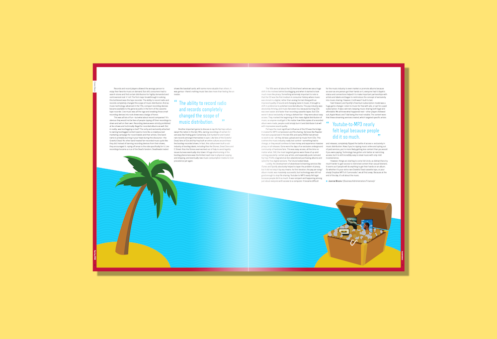
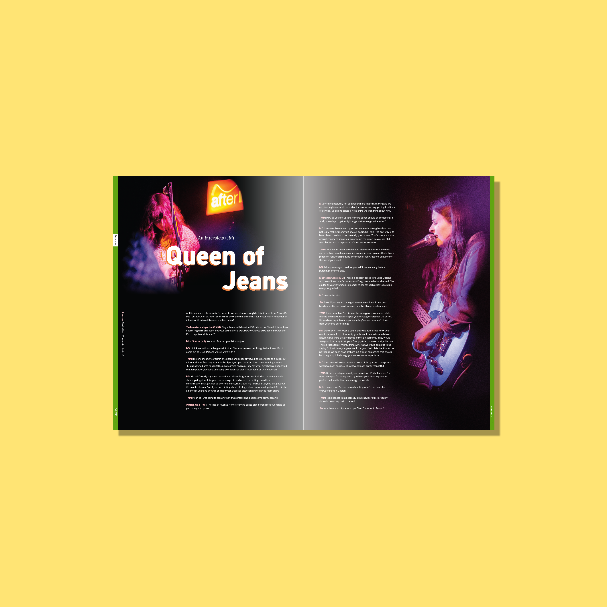
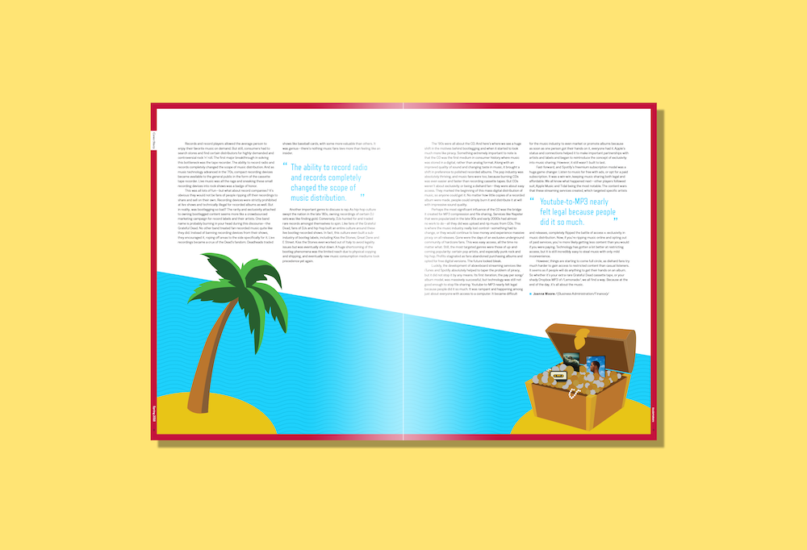
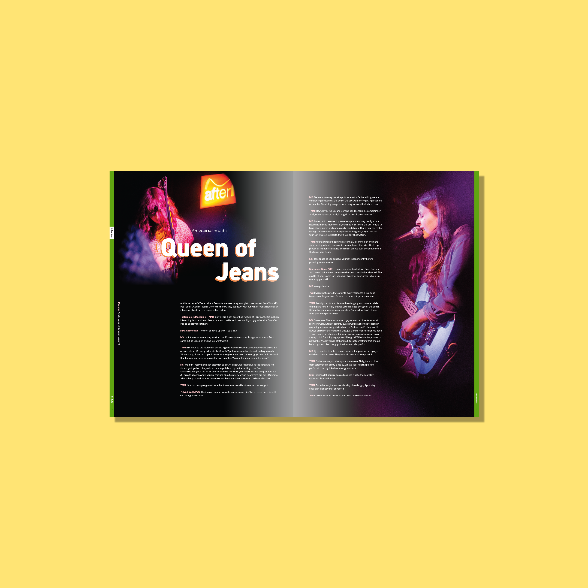

Editorial Designer for music magazine.
Tastemakers is a Northeastern University based magazine that allows students to have a voice in the music industry. As a designer, I began with a style guide and worked from there. During meetings, we showed off our work and received feedback on what we could improve for next week. All of the final spreads are combined and printed to create the bi-semester magazine.
For my first issue I choose to design a spread about Jazz on Columbus Avenue. I decieded to first focus on colors that would elicit a jazz-y feeling. I decided on a deep purple for the background and bright colors for any additional elements. When reading through the article, the writer really highlighted the fact that Columbus Avenue is so close to Northeastern. By having 'Columbus Ave.' part of the title look like a street sign, I continued to show the signifigance of location. For the 2-page spread, I immediately thought of the idea of having silhouettes playing well-known jazz instruments. The "movement" of this figures was added towards the end to make the figures feel more alive.

My second spread was on bootleg music. I decided to take a fun twist with the article and went with a pirate theme and bright color palette. I used a treasure box to highlight some of the albums mentioned by the author, while also staying true to my theme. The wave texture was added to create more visual intrigue and make the blue look more like water. 
This fall I was able to return to Tastemakers while on co-op. The spread I designed was an interview with Queen of Jeans who played at Northeastern recently. After listening to their music, I really want to incorporate darks colors with pops or orange and pink. Thankfully, the photographer had the same vision and the spread pulled together very well. 
For my first issue I choose to design a spread about Jazz on Columbus Avenue. I decieded to first focus on colors that would elicit a jazz-y feeling. I decided on a deep purple for the background and bright colors for any additional elements. When reading through the article, the writer really highlighted the fact that Columbus Avenue is so close to Northeastern. By having 'Columbus Ave.' part of the title look like a street sign, I continued to show the signifigance of location. For the 2-page spread, I immediately thought of the idea of having silhouettes playing well-known jazz instruments. The "movement" of this figures was added towards the end to make the figures feel more alive.
Columbus Avenue Jazz, Adobe Illustrator and InDesign
My second spread was on bootleg music. I decided to take a fun twist with the article and went with a pirate theme and bright color palette. I used a treasure box to highlight some of the albums mentioned by the author, while also staying true to my theme. The wave texture was added to create more visual intrigue and make the blue look more like water. 
Bootleg to Peg-Legged, Adobe Illustrator and InDesign
This fall I was able to return to Tastemakers while on co-op. The spread I designed was an interview with Queen of Jeans who played at Northeastern recently. After listening to their music, I really want to incorporate darks colors with pops or orange and pink. Thankfully, the photographer had the same vision and the spread pulled together very well. 
Queen of Jeans, Adobe InDesign